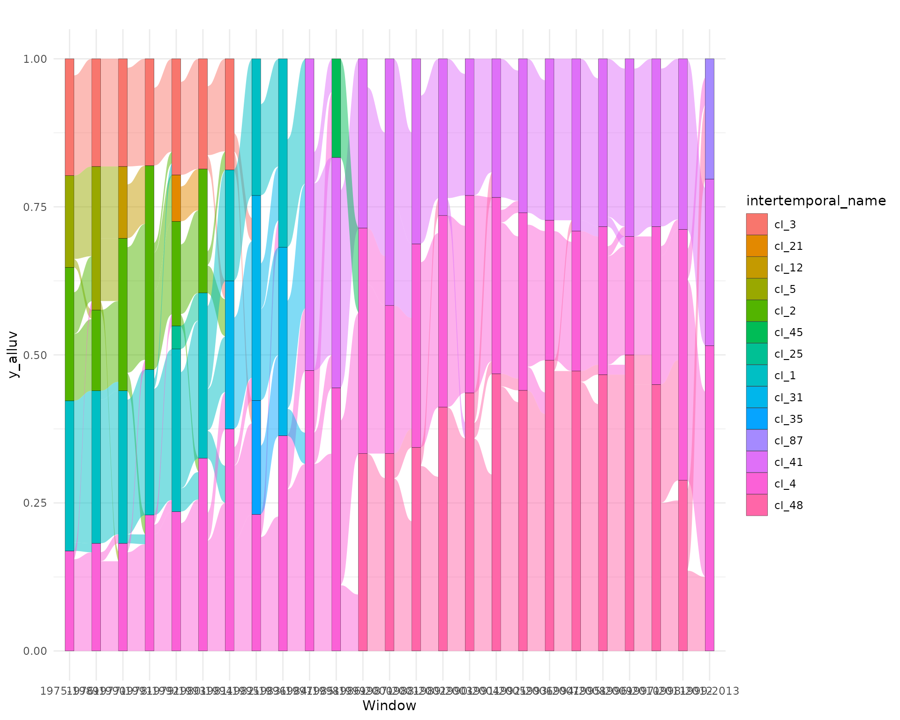

Exploring dynamic networks
Aurélien Goutsmedt and Alexandre Truc
Source:vignettes/exploring_dynamic_networks.Rmd
exploring_dynamic_networks.RmdThis vignette introduces you to some functions of the package with the [data integrated][Incorporated data] in the package. Here, we are interested to the exploration of dynamic networks.
Building your list of networks
library(networkflow)
#> Warning: replacing previous import 'DescTools::%like%' by 'data.table::%like%'
#> when loading 'networkflow'
#> Warning: replacing previous import 'data.table::last' by 'dplyr::last' when
#> loading 'networkflow'
#> Warning: replacing previous import 'data.table::first' by 'dplyr::first' when
#> loading 'networkflow'
#> Warning: replacing previous import 'data.table::between' by 'dplyr::between'
#> when loading 'networkflow'
#> Warning: replacing previous import 'dplyr::union' by 'igraph::union' when
#> loading 'networkflow'
#> Warning: replacing previous import 'dplyr::as_data_frame' by
#> 'igraph::as_data_frame' when loading 'networkflow'
#> Warning: replacing previous import 'dplyr::groups' by 'igraph::groups' when
#> loading 'networkflow'
#> Warning: replacing previous import 'DescTools::%c%' by 'igraph::%c%' when
#> loading 'networkflow'
#> Warning: replacing previous import 'cli::tree' by 'igraph::tree' when loading
#> 'networkflow'
#> Warning: replacing previous import 'igraph::groups' by 'tidygraph::groups' when
#> loading 'networkflow'
#> Warning: replacing previous import 'magrittr::extract' by 'tidyr::extract' when
#> loading 'networkflow'
#> Warning: replacing previous import 'igraph::crossing' by 'tidyr::crossing' when
#> loading 'networkflow'
library(magrittr)
library(dplyr)
#>
#> Attaching package: 'dplyr'
#> The following objects are masked from 'package:stats':
#>
#> filter, lag
#> The following objects are masked from 'package:base':
#>
#> intersect, setdiff, setequal, union
library(tidygraph)
#>
#> Attaching package: 'tidygraph'
#> The following object is masked from 'package:stats':
#>
#> filter
nodes <- Nodes_stagflation %>%
dplyr::rename(ID_Art = ItemID_Ref) %>%
dplyr::filter(Type == "Stagflation")
references <- Ref_stagflation %>%
dplyr::rename(ID_Art = Citing_ItemID_Ref)
single_network <- dynamic_network_cooccurrence(nodes = nodes,
directed_edges = references,
source_column = "ID_Art",
target_column = "ItemID_Ref",
time_variable = NULL,
cooccurrence_method = "coupling_similarity",
time_window = NULL,
edges_threshold = 1,
compute_size = FALSE,
keep_singleton = FALSE,
overlapping_window = TRUE)
#> Warning: `dynamic_network_cooccurrence()` was deprecated in networkflow 0.1.0.
#> ℹ Please use `build_dynamic_networks()` instead.
#> The method use for co-occurence is the coupling_similarity method. The edge threshold is:1.
#> We remove the nodes that are alone with no edge.
network_list <- dynamic_network_cooccurrence(nodes = nodes,
directed_edges = references,
source_column = "ID_Art",
target_column = "ItemID_Ref",
time_variable = "Year",
cooccurrence_method = "coupling_similarity",
time_window = 15,
edges_threshold = 1,
compute_size = FALSE,
keep_singleton = FALSE,
overlapping_window = TRUE)
#> Creation of the network for the 1975-1989 window.
#> The method use for co-occurence is the coupling_similarity method. The edge threshold is:1.
#> We remove the nodes that are alone with no edge.
#>
#> Creation of the network for the 1976-1990 window.
#> The method use for co-occurence is the coupling_similarity method. The edge threshold is:1.
#> We remove the nodes that are alone with no edge.
#>
#> Creation of the network for the 1977-1991 window.
#> The method use for co-occurence is the coupling_similarity method. The edge threshold is:1.
#> We remove the nodes that are alone with no edge.
#>
#> Creation of the network for the 1978-1992 window.
#> The method use for co-occurence is the coupling_similarity method. The edge threshold is:1.
#> We remove the nodes that are alone with no edge.
#>
#> Creation of the network for the 1979-1993 window.
#> The method use for co-occurence is the coupling_similarity method. The edge threshold is:1.
#> We remove the nodes that are alone with no edge.
#>
#> Creation of the network for the 1980-1994 window.
#> The method use for co-occurence is the coupling_similarity method. The edge threshold is:1.
#> We remove the nodes that are alone with no edge.
#>
#> Creation of the network for the 1981-1995 window.
#> The method use for co-occurence is the coupling_similarity method. The edge threshold is:1.
#> We remove the nodes that are alone with no edge.
#>
#> Creation of the network for the 1982-1996 window.
#> The method use for co-occurence is the coupling_similarity method. The edge threshold is:1.
#> We remove the nodes that are alone with no edge.
#>
#> Creation of the network for the 1983-1997 window.
#> The method use for co-occurence is the coupling_similarity method. The edge threshold is:1.
#> We remove the nodes that are alone with no edge.
#>
#> Creation of the network for the 1984-1998 window.
#> The method use for co-occurence is the coupling_similarity method. The edge threshold is:1.
#> We remove the nodes that are alone with no edge.
#>
#> Creation of the network for the 1985-1999 window.
#> The method use for co-occurence is the coupling_similarity method. The edge threshold is:1.
#> We remove the nodes that are alone with no edge.
#>
#> Creation of the network for the 1986-2000 window.
#> The method use for co-occurence is the coupling_similarity method. The edge threshold is:1.
#> We remove the nodes that are alone with no edge.
#>
#> Creation of the network for the 1987-2001 window.
#> The method use for co-occurence is the coupling_similarity method. The edge threshold is:1.
#> We remove the nodes that are alone with no edge.
#>
#> Creation of the network for the 1988-2002 window.
#> The method use for co-occurence is the coupling_similarity method. The edge threshold is:1.
#> We remove the nodes that are alone with no edge.
#>
#> Creation of the network for the 1989-2003 window.
#> The method use for co-occurence is the coupling_similarity method. The edge threshold is:1.
#> We remove the nodes that are alone with no edge.
#>
#> Creation of the network for the 1990-2004 window.
#> The method use for co-occurence is the coupling_similarity method. The edge threshold is:1.
#> We remove the nodes that are alone with no edge.
#>
#> Creation of the network for the 1991-2005 window.
#> The method use for co-occurence is the coupling_similarity method. The edge threshold is:1.
#> We remove the nodes that are alone with no edge.
#>
#> Creation of the network for the 1992-2006 window.
#> The method use for co-occurence is the coupling_similarity method. The edge threshold is:1.
#> We remove the nodes that are alone with no edge.
#>
#> Creation of the network for the 1993-2007 window.
#> The method use for co-occurence is the coupling_similarity method. The edge threshold is:1.
#> We remove the nodes that are alone with no edge.
#>
#> Creation of the network for the 1994-2008 window.
#> The method use for co-occurence is the coupling_similarity method. The edge threshold is:1.
#> We remove the nodes that are alone with no edge.
#>
#> Creation of the network for the 1995-2009 window.
#> The method use for co-occurence is the coupling_similarity method. The edge threshold is:1.
#> We remove the nodes that are alone with no edge.
#>
#> Creation of the network for the 1996-2010 window.
#> The method use for co-occurence is the coupling_similarity method. The edge threshold is:1.
#> We remove the nodes that are alone with no edge.
#>
#> Creation of the network for the 1997-2011 window.
#> The method use for co-occurence is the coupling_similarity method. The edge threshold is:1.
#> We remove the nodes that are alone with no edge.
#>
#> Creation of the network for the 1998-2012 window.
#> The method use for co-occurence is the coupling_similarity method. The edge threshold is:1.
#> We remove the nodes that are alone with no edge.
#>
#> Creation of the network for the 1999-2013 window.
#> The method use for co-occurence is the coupling_similarity method. The edge threshold is:1.
#> We remove the nodes that are alone with no edge.
network_list[[1]]
#> # A tbl_graph: 71 nodes and 435 edges
#> #
#> # An undirected simple graph with 1 component
#> #
#> # Node Data: 71 × 8 (active)
#> ID_Art Author Year Author_… Title Journal Type time_w…
#> <chr> <chr> <int> <chr> <chr> <chr> <chr> <chr>
#> 1 16182155 GORDON-R 1975 GORDON-… ALTERNAT… "BROOKINGS… Stag… 1975-1…
#> 2 26283591 GORDON-R 1975 GORDON-… THE IMPA… "BROOKINGS… Stag… 1975-1…
#> 3 16182201 OKUN-A 1975 OKUN-A-… INFLATIO… "BROOKINGS… Stag… 1975-1…
#> 4 47749045 BRONFENBRENNER-M 1976 BRONFEN… ELEMENTS… "ZEITSCHRI… Stag… 1975-1…
#> 5 1111111141 KARNOSKY-D 1976 KARNOSK… THE LINK… "REVIEW" Stag… 1975-1…
#> 6 1021902 FRIEDMAN-M 1977 FRIEDMA… NOBEL LE… "THE JOURN… Stag… 1975-1…
#> # … with 65 more rows
#> #
#> # Edge Data: 435 × 5
#> from to weight Source Target
#> <int> <int> <dbl> <chr> <chr>
#> 1 6 11 0.00158 1021902 1111111122
#> 2 6 45 0.000173 1021902 1111111128
#> 3 6 66 0.000430 1021902 1111111134
#> # … with 432 more rowsClustering and intertemporal naming
network_list <- lapply(network_list,
function(tbl) tbl %N>% mutate(clusters = group_louvain()))
network_list <- intertemporal_cluster_naming(list_graph = network_list,
cluster_column = "clusters",
node_key = "ID_Art",
threshold_similarity = 0.5001,
similarity_type = "partial")
#> Warning: `intertemporal_cluster_naming()` was deprecated in networkflow 0.1.0.
#> ℹ Please use `merge_dynamic_clusters()` instead.
#> Joining with `by = join_by(clusters)`
#> Joining with `by = join_by(clusters)`
#> Joining with `by = join_by(clusters)`
#> Joining with `by = join_by(clusters)`
#> Joining with `by = join_by(clusters)`
#> Joining with `by = join_by(clusters)`
#> Joining with `by = join_by(clusters)`
#> Joining with `by = join_by(clusters)`
#> Joining with `by = join_by(clusters)`
#> Joining with `by = join_by(clusters)`
#> Joining with `by = join_by(clusters)`
#> Joining with `by = join_by(clusters)`
#> Joining with `by = join_by(clusters)`
#> Joining with `by = join_by(clusters)`
#> Joining with `by = join_by(clusters)`
#> Joining with `by = join_by(clusters)`
#> Joining with `by = join_by(clusters)`
#> Joining with `by = join_by(clusters)`
#> Joining with `by = join_by(clusters)`
#> Joining with `by = join_by(clusters)`
#> Joining with `by = join_by(clusters)`
#> Joining with `by = join_by(clusters)`
#> Joining with `by = join_by(clusters)`
#> Joining with `by = join_by(clusters)`
#> Joining with `by = join_by(clusters)`
network_list[[1]]
#> # A tbl_graph: 71 nodes and 435 edges
#> #
#> # An undirected simple graph with 1 component
#> #
#> # Node Data: 71 × 10 (active)
#> ID_Art Author Year Author… Title Journal Type time_w… cluste… intert…
#> <chr> <chr> <int> <chr> <chr> <chr> <chr> <chr> <chr> <chr>
#> 1 16182155 GORDON… 1975 GORDON… ALTER… "BROOKI… Stag… 1975-1… 4 cl_4
#> 2 26283591 GORDON… 1975 GORDON… THE I… "BROOKI… Stag… 1975-1… 4 cl_4
#> 3 16182201 OKUN-A 1975 OKUN-A… INFLA… "BROOKI… Stag… 1975-1… 1 cl_1
#> 4 47749045 BRONFE… 1976 BRONFE… ELEME… "ZEITSC… Stag… 1975-1… 1 cl_1
#> 5 1111111141 KARNOS… 1976 KARNOS… THE L… "REVIEW" Stag… 1975-1… 2 cl_2
#> 6 1021902 FRIEDM… 1977 FRIEDM… NOBEL… "THE JO… Stag… 1975-1… 1 cl_1
#> # … with 65 more rows
#> #
#> # Edge Data: 435 × 5
#> from to weight Source Target
#> <int> <int> <dbl> <chr> <chr>
#> 1 6 11 0.00158 1021902 1111111122
#> 2 6 45 0.000173 1021902 1111111128
#> 3 6 66 0.000430 1021902 1111111134
#> # … with 432 more rowsBuilding Alluvial
library(ggplot2)
library(ggalluvial)
alluv_dt <- networks_to_alluv(list_graph = network_list,
intertemporal_cluster_column = "intertemporal_name",
node_key = "ID_Art",
summary_cl_stats = FALSE)
alluv_dt <- minimize_crossing_alluvial(alluv_dt = alluv_dt,
node_key = "ID_Art")
alluv_dt[,y_alluv:=1/.N, Window]
#> Warning: Invalid .internal.selfref detected and fixed by taking a (shallow)
#> copy of the data.table so that := can add this new column by reference. At an
#> earlier point, this data.table has been copied by R (or was created manually
#> using structure() or similar). Avoid names<- and attr<- which in R currently
#> (and oddly) may copy the whole data.table. Use set* syntax instead to avoid
#> copying: ?set, ?setnames and ?setattr. If this message doesn't help, please
#> report your use case to the data.table issue tracker so the root cause can be
#> fixed or this message improved.
ggplot(alluv_dt, aes(x = Window, y= y_alluv, stratum = intertemporal_name, alluvium = ID_Art, fill = intertemporal_name, label = intertemporal_name)) +
geom_stratum(alpha =1, size=1/12) +
geom_flow() +
theme(legend.position = "none") +
theme_minimal() +
theme(plot.background = element_rect(fill = 'white', colour = NA)) +
ggtitle("")
exploring tf-idf
corpus <- merge(alluv_dt,
nodes,
by = "ID_Art",
all.x = TRUE)
tf_idf <- extract_tfidf(data = corpus,
text_columns = "Title",
grouping_columns = "intertemporal_name",
n_gram = 3L,
stopwords = NULL,
stopwords_type = "smart",
clean_word_method = "lemmatize",
ngrams_filter = 2)
tf_idf %>%
group_by(document) %>%
slice_max(order_by = tf_idf, n = 1, with_ties = FALSE) %>%
ungroup() %>%
arrange(intertemporal_name) %>%
select(-document)